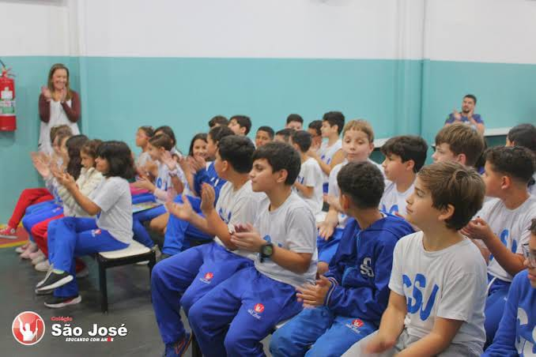

01
Educação
O Colégio São José, uma das instituições de ensino mais tradicionais de Ribeirão Pires, atende desde a Educação Infantil até o Ensino Médio com uma proposta pedagógica focada na formação integral, aliando o desenvolvimento acadêmico a valores humanos e sociais. Sua estrutura valoriza vivências práticas e comunitárias, promovendo eventos ao longo de todo o ano letivo que integram aprendizado, arte, esporte e cultura.
